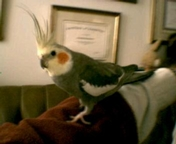

Маша.
Машу покупали без меня. Конечно же я хотел мальчика. Еще задолго до
того мы все решили, что нам нужен попугай. Причем не какой-нибудь,
а "серый с красными щечками".
В зоомагазине был большой вольер, где шустро бегала целая стая попугаев
"с щечками". Одна только Маша сидела на веточке в стороне от всех и
разглядывала посетителей магазина. Когда рядом кто-то проходил,
она вытягивала к нему клювик и чуть пританцовывала, будто
говоря: "Ну посмотрите же на меня. Купите. Глядите, какая я красавица".
Ее и выбрали. Из всех птиц Маша была самой серенькой.
- Скорее всего, это девочка, - сказала продавщица, собирая Машу в дорогу.
Конечно, Маша была тогда не Машей, а просто безымянной птицей. Имя
ей дали по пути домой.
Да. Но все это происходило в мое отсутствие.
- Ну что, купили, - спросил я, позвонив с работы.
- Машенька уже дома.
- Машенька?!...
Остаток дня она просидела в углу свой новой клетки, отвернувшись к
стене. На людей не реагировала. Только изредка поворачивала голову
и глядела на нас с немым укором: "Мне страшно, где мои друзья?". В первый
день Маша съела одно-два зернышка и совсем не пила. Я даже думаю, что
она не спала в первую ночь. Клетку мы не накрывали, не знали что так
лучше. А утром она все еще сидела на том же месте в той же позе,
ссутулившись, как старушка.
Первый выход Маши из клетки закончился травмой. Собственно, виной
тому подрезанные крылья. В магазине птиц держали в вольерах и конечно
крылья им укорачивали, иначе как удержишь? Причем, подрезали перья,
расположенные ближе к туловищу. А самые длинные, на концах
крыльев, оставили нетронутыми. Таким образом, когда птица сидит, совсем
не видно, что перья обрезаны.
Конечно, сама она из клетки не пошла. На протянутые к ней руки
не реагировала и вообще находилась в состоянии сильнейшего стресса.
Тогда ее взяли в охапку и вытащили наружу. Она почти не сопротивлялась.
Маша сидела у меня на руке и даже несколько раз робко укусила
за палец. По неосторожности я сделал резкое движение и она бросилась
в воздух. Но крылья были подрезаны и бедняжка шмякнулась прямо на пол.
Не сильно. У нас на полу толстый ковер. Но большое перо на одном
из крыльев надломилось в том месте, где оно присоединяется к телу.
Чуть позже, уже в клетке, Маша начала теребить это перо, и когда
появилась кровь, мы поняли, что случилось. Как ни страшно было нам,
пришлось вмешаться. Птицу повторно силой вытащили из клетки и
в то время, как я крепко ее удерживал, жена ножницами обрезала поломанное
перо у самого основания...
С того дня прошел почти год, но я до сих пор помню, как кричала Маша
во время этой "операции". А что было делать? Тогда я и подумал, что
никогда не стану подрезать птице крылья, не буду ее калечить, хоть
это и предписывается многими "умными" книгами.
В этот день до самого вечера Маша опять почти не ела и совсем не
пила, но первый стресс явно пошел на убыль. Ближе к ночи она уже
внимательно изучила свою клетку и, о радость, наконец-то сделала
несколько глотков воды. А после разразилась оглушительным чириканьем.
Перед сном она даже клюнула несколько раз игрушку с колокольчиком.
На ночь клетку накрыли. Утром мы проснулись от звона того же
колокольчика. Птица драла игрушку всеми лапами и клювом. А потом,
утомившись, отправилась завтракать.
С этого дня наши дела пошли на поправку. Впрочем, спустя несколько
дней Маша поломала перо и на другом крыле. Но в этот раз она
благополучно отгрызла его сама. К концу второй недели она начисто
обломала себе и хвост, который постоянно застревал между прутьями
клетки. До этого Маша жила в вольере и теперь не могла привыкнуть
к этим гадким прутьям. Правила обращения с хвостом в условиях клетки
она уяснила позже.
К рукам Маша привыкла на удивление быстро. А еще придумала специальный
сигнал, по которому мы должны были выпускать ее из на волю. Она забиралась
в кормушку c ногами и начинала разбрасывать корм. Так она поступает и
теперь, когда хочет выйти.
- Здравствуй Маша, - сказал я как-то вечером, вернувшись с работы.
Это было примерно через две недели после нашего знакомства. Птица подбежала
по жердочке в угол клетки и высунула клюв между прутьями. Потом спустилась
к кормушке и начала отчаянно раскидывать семена. Когда я открыл дверку,
она взбежала по моей руке на плечо и, приблизив голову к самому уху, нежно
сказала "Чирик".
А потом мы стали учиться летать. Новые перья отросли быстро. И я,
вдруг, понял, что Маша, хоть и молодая, но уже взрослая птица, никогда
раньше не летала. Оно и понятно. Вряд ли у нее была такая возможность.
Главные проблемы возникли с посадкой. Взлететь - много ума не надо.
Это вам любой летчик объяснит. А вот для того чтобы сесть нужно сперва
место выбрать, рассчитать скорость, направление и пр. Всего этого Маша не
знала. Поэтому, взлетев и сделав два-три витка вокруг комнаты, она попросту
падала на пол. Как-то раз при попытке приземлиться, она врезалась в
комнатный цветок. Горшок опрокинулся, а сама горе-летчица завалилась в щель
между письменным столом и стенкой, откуда сразу была извлечена, растрепанная,
но счастливая.
Но конечно, главной вехой в освоении неба явилась люстра. Маша научилась
приземляться на встроенный туда огромный вентилятор и это было
сокрушительной победой. На несколько дней люстра стала ее любимым местом
времяпровождения. А главное, теперь у Маши появилась возможность глядеть
на нас сверху вниз, как и подобает всякой птице.
Теперь о лапах. Не все, наверное, знают, что лапы у попугаев устроены
не так, как у других птиц. Два пальца у них направлены вперед, а два -
назад. Маша, к тому же, располагает поистине крокодильими когтями, что
дает ей возможность лазать где угодно и как угодно. Порой она зависает
на карнизе, как летучая мышь, вниз головой, разводит крылья и
растопыривает хвост.
Когда семья садится обедать, Маша не прочь прошвырнуться по столу и
отведать хозяйских харчей. При этом залазит в тарелку прямо "с ногами".
Это, кстати, единственная возможность накормить Машу овощами и фруктами.
Из своей кормушки она ест только пшено. А из человеческой пищи
предпочитает гречневую кашу и макароны. Ну а из напитков - конечно чай!
Сказать, что Маша любит чай - значит ничего не сказать. Она настолько
его обожает, что если дать ей свободу, будет пить, пока не лопнет.
Обычно я готовлю очень крепкий чай. Горький, терпкий и без сахара.
Завидев меня на кухне и почуяв запах свежего чая, Маша прилетает ко мне
на плечо и быстренько карабкается по руке к вожделенной кружке. Причем то,
что чай горячий, ее совершенно не смущает. Оно и понятно. Температура
тела у птиц - сорок один градус. Поэтому, то, что нам горячо, ей вполне
приемлемо.
Недавно Маша бросила курить. Предыстория этого дела такова. Порой
мне доводится оставаться в квартире наедине с Машей. И она, конечно,
не слазит с моего плеча. Ну, или сидит на люстре, не спуская с меня
глаз. Стоит ей заметить, что я выхожу из комнаты, она стремглав порхает
вниз и вонзается в меня всеми когтями и клювом. Вот и получилось, что
выходить в ванную на перекур мне приходилось с птицей на плече. Конечно
я знаю, что табачный дым попугаям вреден (а кому он полезен?). Но
поделать я ничего не мог.
После нескольких таких перекуров Маша стала спускаться по моей руке,
поближе к сигарете, лишь только я чиркал зажигалкой. И тогда я понял,
что птице пора завязывать.
- Мария, - сказал я строгим голосом, посадив ее на палец и глядя в
глаза, - вы, несомненно, знаете, что капля никотина убивает страуса.
Маша склонила голову и глядела с недоверием.
- Поэтому с сегодняшнего дня - ни одной сигареты.
После этого разговора мне пришлось уединяться в ванной без Маши и курить
под звуки горестных воплей снаружи. Чтобы не травмировать психику
животного я стал ходить на перекуры реже. И теперь уже не пойму, кто кого
курить отучает? Я - ее, или она - меня.
Маша - умная и добрая птица. Не говорит. Не получается у нее. Иногда
щелкает клювом и шипит. Видимо, не понимает, что надо использовать
и голос. Ну, даст Бог, научится.
А музыку как любит! Я порой играю ей на индейской свирели. Верите,
нет, Маша предпочитает птичьи мелодии. А именно - "Чижик-Пыжик",
"Птичка над моим окошком" или даже "Сидела птичка на лугу, подкралась
к ней корова". Она внимательно слушает, подняв хохолок, и даже пытается
подпевать.
Иногда она ласкается как кошка. Или просто заберется на плечо, уткнется
головой мне в шею и сидит тихонечко, закрыв глаза. Дышит горячо и часто.
А я боюсь пошевелиться, что б не побеспокоить. Такая у нас любовь. Любовь
человека и птицы.
(C) *** JES 2003 *** Юрий Шимановский yury@unitrends.com
http://www.geocities.com/Paris/Salon/1821
Назад|На главную